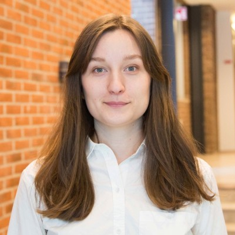

<div style="display: flex; align-items: center;">
  
  <div>
    <p>
        Welcome to my homepage! My name is Hilda Sandström, and I am a computational chemist specializing in atmospheric chemistry and astrochemistry. I obtained my graduate degree from Chalmers University of Technology in computational chemistry applied to the (astro-) chemistry of hydrogen cyanide and its polymers. Since two years, I am a postdoctoral researcher at <a href="https://research.aalto.fi/en/persons/hilda-sandstr%C3%B6m">Aalto University</a> and the <a href="https://www.helsinki.fi/en/researchgroups/vilma">Virtual laboratory for molecular level atmospheric transformations (VILMA) center of excellence</a> in Espoo, Finland.
    </p>
  </div>
</div>
